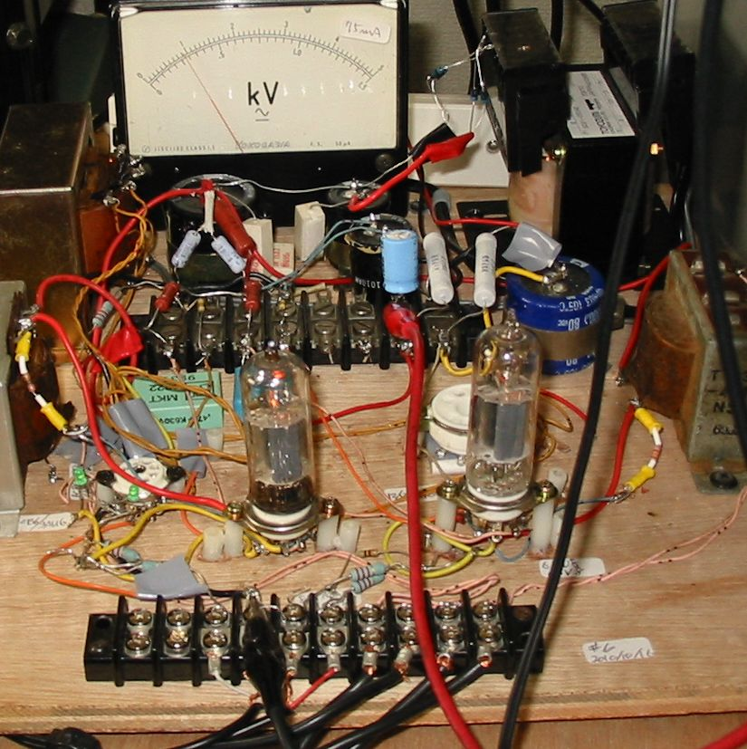
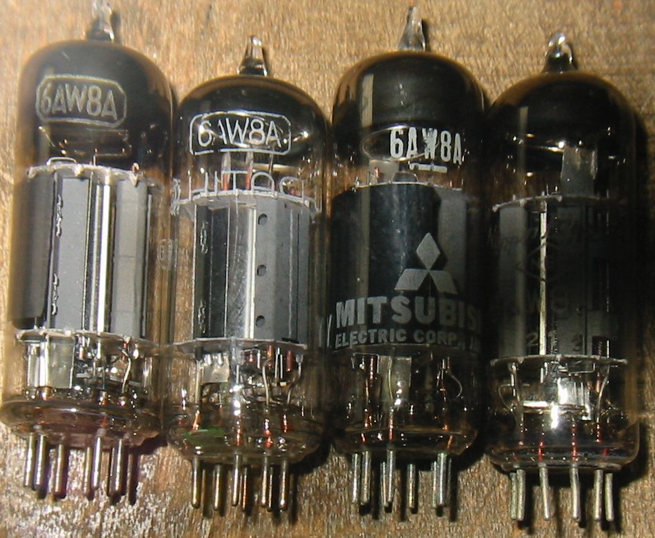
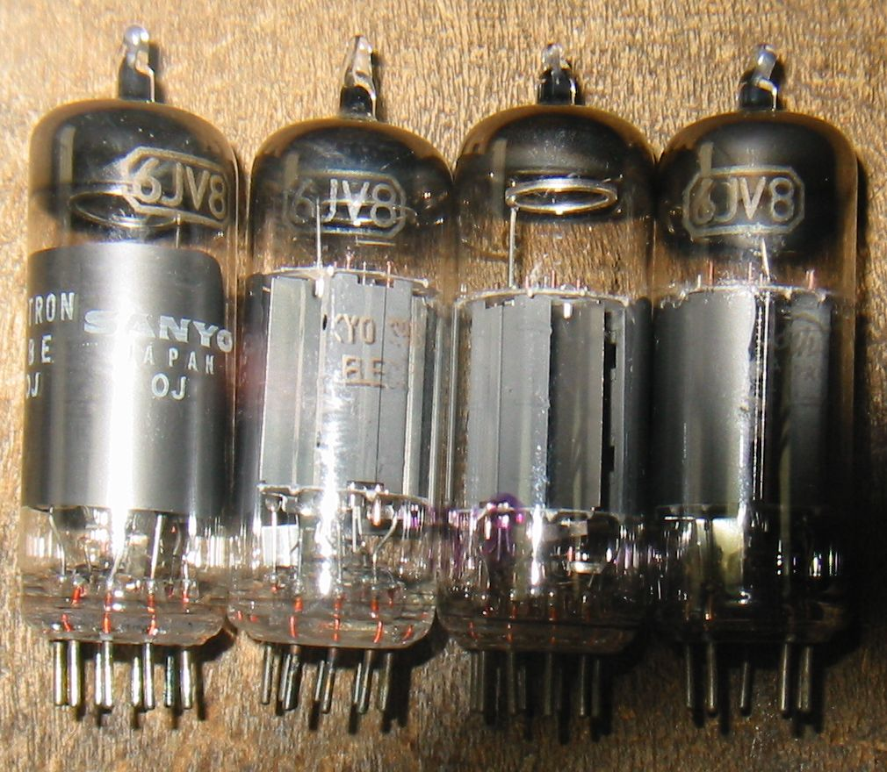
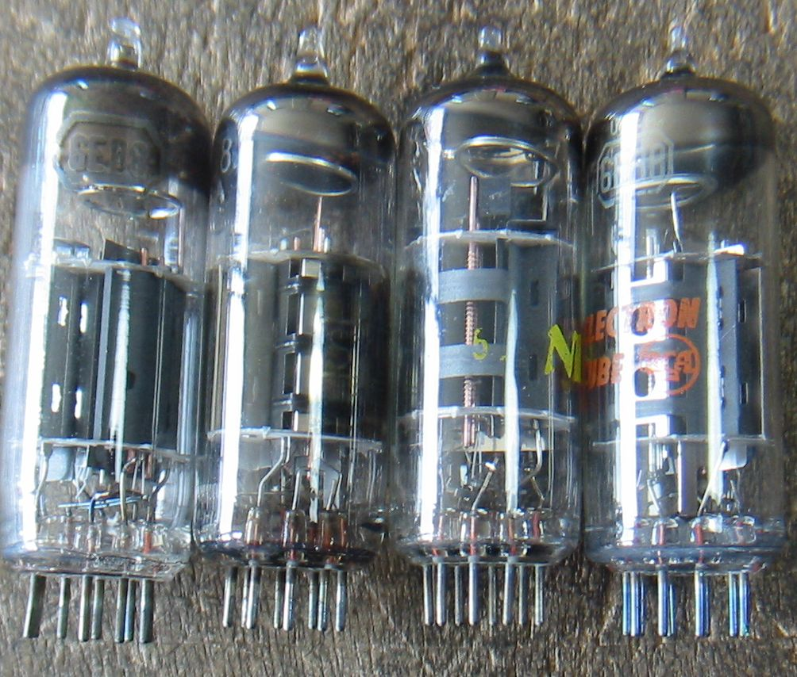
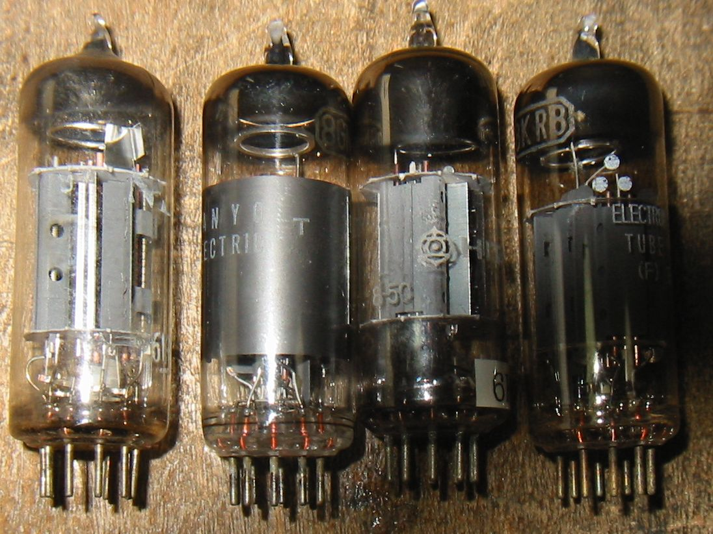

6AW8や6JV8などをオーディオアンプの出力管として使ってみます。
前回、8A8や9GH8Aなど使い道のない管を試せるように改造したアンプを、パソコン用につないで使っていましたが、
もう少し出力が欲しかったのと他の球も試したかったので、6AW8用に改造しました。
抵抗やコンデンサなど部品は8A8/9GH8Aのときと同じです
下の写真は6AW8Aを使用したステレオアンプで出力段は3結です。電流計はフルスケール75mAなので、出力段の
カソード電流は約15mAということになります。Ep=215V、Rk=390Ω、Isg=3mA、したがってバイアス電圧は6V、
ドライブはPeak to Peakで6Vしかいりません。

TV-Video用3極5極複合管はオーディオアンプの出力管として使えます。
次の表は代表的な小型出力管とTV-Video用3極5極複合管の5極部の規格です。
| 定格 | プレート電圧/電流 | スクリーングリッド電圧/電流 | プレート許容損失 | グリッド電圧 | Gm | RL | 出力 |
| 6ZP1 | 180V/15mA | 180V/2.5mA | 3.5W | -10V | 2300μﾓｰ | 12KΩ | 1.0W |
| 6AK6 | 180V/15mA | 180V/2.5mA | 2.75W | -9V | 1750μﾓｰ | 10KΩ | 1.1W |
| 6AW8A | 200V/15mA | 150V/3.5mA | 3.75W | -2 | 9500μﾓｰ | 不明（7KΩで使用） | 不明 |
| 6JV8 | 125V/22mA | 125V/4mA | 4W | 不明 | 11500μﾓｰ | 不明（7KΩで使用） | 不明 |
| 6EB8 | 200V/25mA | 125V/7mA | 5W | 不明 | 11500μﾓｰ | 不明（7KΩで使用） | 不明 |
6AW8Aで試してみる。
前作と同様に、5極管のままでは感度が高すぎ、また内部抵抗も高すぎるので、3極管接続とする。
部品は8A8/9GH8Aと同じでカソード抵抗は390Ω、Ik=15mAとなり、プレート電圧215Vに対し、プレート損失約3Wとなる。
音を出してみると、十分に大きな音で、音質も悪くない。
この球の3結時の増幅率はグラフから読むと約25なので、内部抵抗は25/0.0095=2631Ωとなる。したがって、5KΩか
7KΩの負荷インピーダンスでよいことになる。
6AW8A

他の球も試してみる。
次に6AW8とピン接続が同じ6JV8、6LF8それにヒータ電圧違いの8EB8、8GN8なども試してみた。
これも全く問題なく動作する。
6JV8

6EB8

その他の代表的なVideo用3極5極複合管
6LF8、8GN8、6KA8、8KR8
6KA8はまだ試していません。

2011/05/07
back to top
back to home page